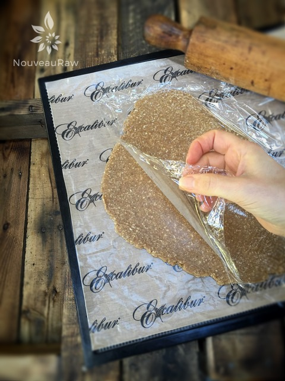
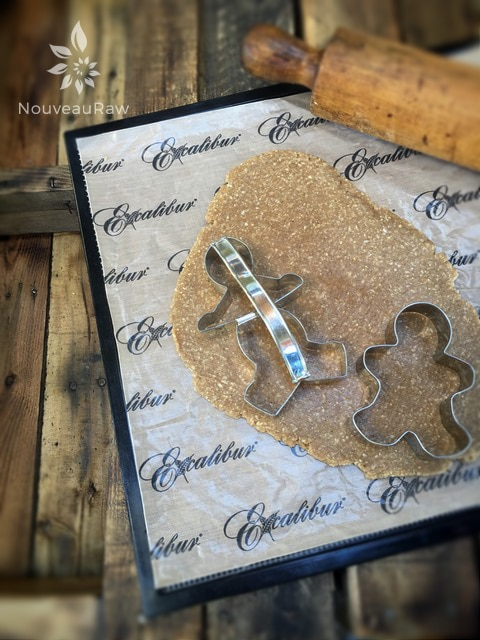
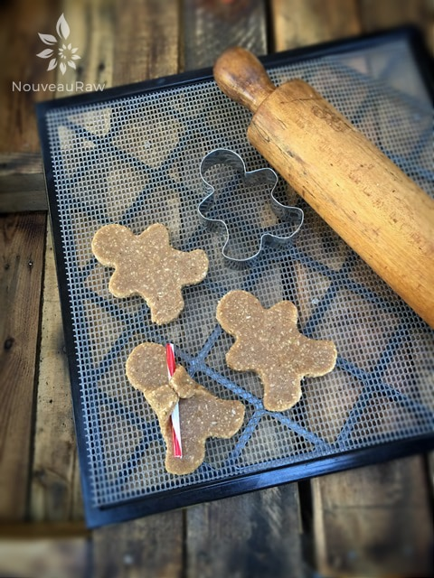
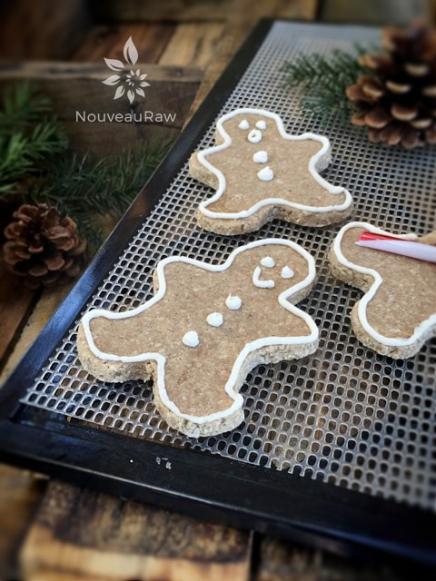

Gingerbread Cookies

~ raw, vegan, gluten-free ~
To some people, the word gingerbread means soft and chewy. To others, it means crisp and crunchy. I am going to go as far as saying that these cookies are somewhere in between.
In my opinion, gingerbread is all-encompassing of the flavor. I just love the warming spices of cinnamon, cloves, allspice, and black pepper.
With these flavors swirling throughout the dehydrator, they will fill your house with the best-ever aroma.
These cookies are high in protein, fiber, healthy fats, iron, calcium, B vitamins, antioxidants, and magnesium, just to name a few. I can guarantee that you won’t find all that in your average gingerbread cookie.
Holiday Traditions
I dunno, this may sound odd coming from a grown, well-matured woman who doesn’t have any children… but my all-time favorite movie is Shrek (the first one). Somehow it became my own little tradition to watch it over and over during the holiday season.
One of my favorite lines is when the little gingerbread man says, “Oh noooo, not my gumdrop buttons!!!” I love saying, hearing, and watching it. haha So needless to say, I had way too much fun with these cookies.
Do you have any personal holiday traditions that you would like to share with me? I would love to hear about them. Many blessings, amie sue
Yields 16 gingerbread people
Dry Ingredients:
Wet Ingredients:
- 1/3 cup maple syrup
- 2 tsp vanilla extract
- 1 1/2 tsp fresh grated ginger
- 2 Tbsp water
Preparation:
- In a food processor, fitted with the “S” blade, pulse together the cashew flour, almond meal, coconut flour, shredded coconut, salt, cinnamon, allspice, cloves, and black pepper.
- Measure out the maple syrup and to that add the vanilla extract, freshly grated ginger, and water.
- Stir together and pour into the food processor along with the dry ingredients.
- Process until it starts sticking together and forms a ball. The dough is very sticky.
- Wrap the dough in plastic wrap and place in the freezer for roughly 1 hour or until chilled through.
- This step is very important. If you attempt to skip it you will find the dough too sticky to deal with.
- You could also place the dough in the fridge overnight if you wanted to do this in phases.
- Once chilled, line your surface with plastic wrap and place the chilled dough ball in the center.
- Cover with another piece of plastic, then start to roll the dough out to about 1/4″ thick.
- Remove the top plastic piece and using cookie cutters, cut out your shape(s) and transfer them to the mesh sheet that comes along with your dehydrator.
- Dehydrate at 145 degrees (F) for 1 hour, then reduce to 115 degrees for approximately 10-16 hours or until desired dryness is reached.
- Frost, decorate, and eat!
Suggested Sous Chef Substitutions:
- Cashews ~ use macadamia nuts or almonds with their skins removed
- Raw coconut flour ~ I don’t recommend substituting. This flour helps to absorb moisture. It is unique in that way.
- Maple syrup ~ raw coconut nectar
- Dehydrating ~ I have not tested baking these in the oven. So if you are interested in that method, you will need to experiment.
Culinary Explanations:
- Why do I start the dehydrator at 145 degrees (F)? Click (here) to learn the reason behind this.
- When working with fresh ingredients it is important to taste test as you build a recipe. Learn why (here).
- Don’t own a dehydrator? Learn how to use your oven (here). I do however truly believe that it is a worthwhile investment. Click (here) to learn what I use.

Roll the dough out to roughly 1/4″ thick. I highly recommend placing a sheet of plastic on top of the dough as you roll it out. This will keep the rolling pin clean and the dough will resist sticking to it.

Cut out the cookies, gather the dough back up, roll it out, and repeat the process until all the dough is used up.

Place the cookies on the mesh sheet that comes with the dehydrator to speed up the drying process.

© AmieSue.com